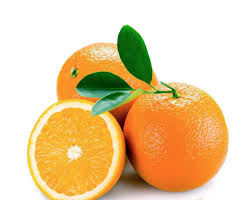

Tutto sulle Arance!
Le arance sono frutti super gustosi e salutari!
Sono piene di vitamina C, che aiuta a rafforzare il sistema immunitario e a tenere lontani i raffreddori.
Perché mangiare le arance?
- Per avere un sorriso smagliante!
- Per avere più energia!
- Per una pelle più luminosa!
Ricette divertenti con le arance
Vuoi provare qualcosa di nuovo? Ecco alcune idee:
- Spremuta d'arancia fatta in casa
- Torta all'arancia (chiedi aiuto a un adulto!)
- Gelatina all'arancia

Curiosità sulle arance
Lo sapevi che...
- Le arance esistono di tanti colori diversi, dal giallo all'arancio scuro?
- Il succo d'arancia è una bevanda sportiva naturale?
era meglio L`anguria vero?
o forse vuoi solo tornare dal fruttivendolo?
p.s. c`è ancora qualcosa da vedere se non lo hai già visto, ecco qui